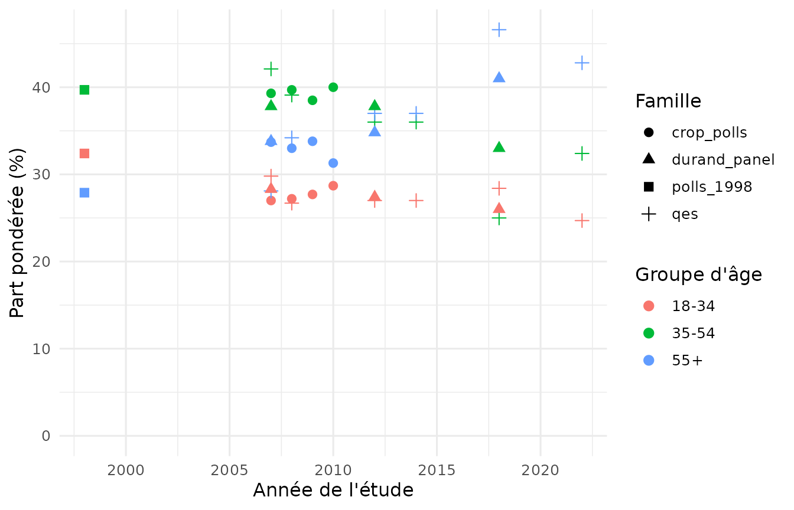
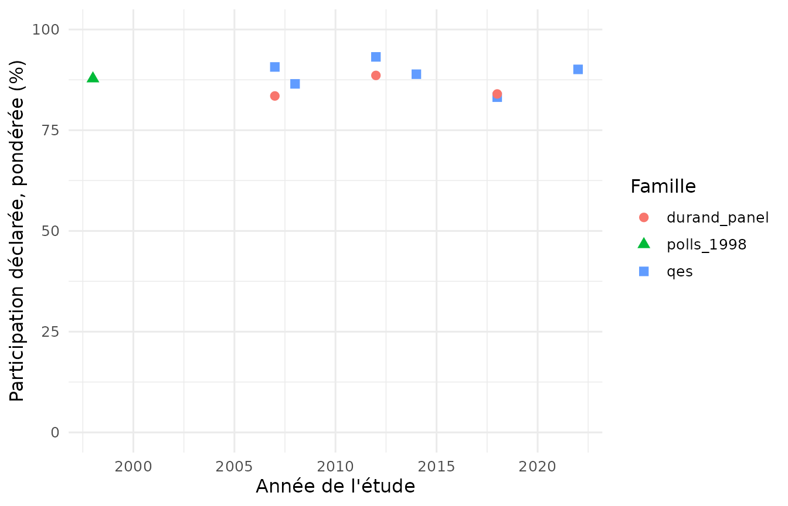

Exemple : répondants par étude
Source:vignettes/articles/fr-analyse-descriptive.Rmd
fr-analyse-descriptive.RmdCette page décrit les répondants des études du fichier fusionné
hérité, get_qes_master(), étude par étude. Elle est
construite en même temps que le site : les fichiers de données sont
téléchargés de leurs dépôts Dataverse par le cache de qesR, et les
nombres sont donc ceux des fichiers complets, pas d’un échantillon.
Pour des estimations avec le moteur d’harmonisation (expérimental), avec un niveau de comparabilité pour la question de chaque étude et la pondération de la vague qui l’a posée, voir Harmoniser entre études.
Les études n’ont pas été conçues de la même façon : les Études
électorales québécoises (famille qes), les panels Durand
(durand_panel), les sondages CROP (crop_polls)
et les sondages de 1998 (polls_1998) diffèrent par le mode,
la population cible et les questions. Chaque estimation ci-dessous est
calculée à l’intérieur d’une étude, avec la pondération propre à cette
étude (survey_weight), et n’est jamais regroupée entre
études. Ce sont des estimations ponctuelles : elles ne tiennent pas
compte du plan de sondage de chaque enquête, et aucun intervalle de
confiance n’est donné.
tr <- function(en, fr) if (identical(params$lang, "fr")) fr else en
master <- get_qes_master(quiet = TRUE)
studies <- qes_studies()
master$family <- studies$family[match(master$qes_code, studies$study)]
master$year <- as.integer(master$qes_year)
# Weighted share of each value of x, within one study (or one CROP year)
wshare <- function(x, w) {
ok <- !is.na(x) & !is.na(w)
if (!any(ok)) return(NULL)
tapply(w[ok], x[ok], sum) / sum(w[ok])
}
cells <- split(master, list(master$qes_code, master$year), drop = TRUE)Tableau 1 : répondants par étude
Tous les répondants de chaque fichier de données sont gardés. Les sondages CROP sont des sondages mensuels de 2007 à 2010, présentés par année.
sizes <- do.call(rbind, lapply(cells, function(d) {
data.frame(study = d$qes_code[1], year = d$year[1], family = d$family[1], n = nrow(d))
}))
sizes <- sizes[order(sizes$year, sizes$study), ]
knitr::kable(
sizes, row.names = FALSE,
col.names = tr(c("Study", "Year", "Family", "Respondents"),
c("Étude", "Année", "Famille", "Répondants"))
)| Étude | Année | Famille | Répondants |
|---|---|---|---|
| qes1998 | 1998 | polls_1998 | 1483 |
| qes_crop_2007_2010 | 2007 | crop_polls | 5007 |
| qes2007 | 2007 | qes | 2175 |
| qes2007_panel | 2007 | durand_panel | 2442 |
| qes_crop_2007_2010 | 2008 | crop_polls | 10012 |
| qes2008 | 2008 | qes | 1151 |
| qes_crop_2007_2010 | 2009 | crop_polls | 8008 |
| qes_crop_2007_2010 | 2010 | crop_polls | 1000 |
| qes2012 | 2012 | qes | 1505 |
| qes2012_panel | 2012 | durand_panel | 844 |
| qes2014 | 2014 | qes | 1517 |
| qes2018 | 2018 | qes | 3072 |
| qes2018_panel | 2018 | durand_panel | 1250 |
| qes2022 | 2022 | qes | 1521 |
Tableau 2 : groupes d’âge
Les études n’enregistrent pas l’âge avec les mêmes tranches : six
tranches dans la plupart des études, trois (18-34, 35-54, 55+) dans le
panel Durand de 2018 (qes2018_panel). Les six tranches
s’emboîtent dans les trois ; le tableau utilise donc trois tranches. Les
populations cibles diffèrent aussi : qes2018 couvre les
personnes de 16 ans et plus, les sondages de 1998 les francophones
seulement (voir qes_studies()$target_population_fr).
Les parts sont calculées parmi les répondants dont le groupe d’âge
est connu, dénombrés dans la colonne « N ». Les répondants de 16 ou 17
ans de qes2018 n’ont pas de groupe d’âge dans le fichier
hérité et sont exclus, comme les quelques répondants d’autres études
dont l’âge manque.
band3 <- c("18-24" = "18-34", "25-34" = "18-34", "18-34" = "18-34",
"35-44" = "35-54", "45-54" = "35-54", "35-54" = "35-54",
"55-64" = "55+", "65+" = "55+", "55+" = "55+")
master$age3 <- unname(band3[master$age_group])
cells <- split(master, list(master$qes_code, master$year), drop = TRUE)
age <- do.call(rbind, lapply(cells, function(d) {
s <- wshare(d$age3, d$survey_weight)
if (is.null(s)) return(NULL)
data.frame(study = d$qes_code[1], year = d$year[1], family = d$family[1],
n = sum(!is.na(d$age3) & !is.na(d$survey_weight)),
age3 = names(s), pct = round(100 * as.numeric(s), 1))
}))
age_wide <- reshape(age, idvar = c("study", "year", "family", "n"), timevar = "age3",
direction = "wide")
age_wide <- age_wide[order(age_wide$year, age_wide$study), ]
knitr::kable(
age_wide, row.names = FALSE, format.args = list(decimal.mark = tr(".", ",")),
col.names = c(tr(c("Study", "Year", "Family", "N with an age group"),
c("Étude", "Année", "Famille", "N avec un groupe d'âge")),
"18-34 (%)", "35-54 (%)", "55+ (%)")
)| Étude | Année | Famille | N avec un groupe d’âge | 18-34 (%) | 35-54 (%) | 55+ (%) |
|---|---|---|---|---|---|---|
| qes1998 | 1998 | polls_1998 | 1482 | 32,4 | 39,7 | 27,9 |
| qes_crop_2007_2010 | 2007 | crop_polls | 5007 | 27,0 | 39,3 | 33,7 |
| qes2007 | 2007 | qes | 2135 | 29,8 | 42,1 | 28,1 |
| qes2007_panel | 2007 | durand_panel | 2438 | 28,3 | 37,8 | 33,8 |
| qes_crop_2007_2010 | 2008 | crop_polls | 10012 | 27,2 | 39,7 | 33,0 |
| qes2008 | 2008 | qes | 1151 | 26,7 | 39,1 | 34,2 |
| qes_crop_2007_2010 | 2009 | crop_polls | 8008 | 27,7 | 38,5 | 33,8 |
| qes_crop_2007_2010 | 2010 | crop_polls | 950 | 28,7 | 40,0 | 31,3 |
| qes2012 | 2012 | qes | 1505 | 27,0 | 36,0 | 37,0 |
| qes2012_panel | 2012 | durand_panel | 844 | 27,4 | 37,8 | 34,8 |
| qes2014 | 2014 | qes | 1517 | 27,0 | 36,0 | 37,0 |
| qes2018 | 2018 | qes | 2839 | 28,4 | 25,0 | 46,6 |
| qes2018_panel | 2018 | durand_panel | 1250 | 26,0 | 33,0 | 41,0 |
| qes2022 | 2022 | qes | 1521 | 24,7 | 32,4 | 42,8 |
ggplot(age, aes(x = year, y = pct, colour = age3, shape = family)) +
geom_point(size = 2.5) +
scale_y_continuous(limits = c(0, NA)) +
labs(
x = tr("Year of the study", "Année de l'étude"),
y = tr("Weighted share (%)", "Part pondérée (%)"),
colour = tr("Age group", "Groupe d'âge"),
shape = tr("Family", "Famille")
) +
theme_minimal(base_size = 12)
Tableau 3 : participation déclarée
turnout est la participation déclarée après l’élection
(1 a voté, 0 n’a pas voté), dans toutes les études qui l’ont demandée ;
qes2022 y répond dans sa vague postélectorale. Il vaut
NA dans les sondages CROP, qui n’ont demandé que les
intentions (voir attr(master, "legacy_na_columns")). Les
enquêtes surestiment la participation : les personnes qui votent
répondent plus volontiers, et certaines qui n’ont pas voté disent
l’avoir fait.
turnout <- do.call(rbind, lapply(cells, function(d) {
s <- wshare(d$turnout, d$survey_weight)
if (is.null(s) || !"1" %in% names(s)) return(NULL)
data.frame(study = d$qes_code[1], year = d$year[1], family = d$family[1],
n = sum(!is.na(d$turnout)), pct = round(100 * s[["1"]], 1))
}))
turnout <- turnout[order(turnout$year, turnout$study), ]
knitr::kable(
turnout, row.names = FALSE, format.args = list(decimal.mark = tr(".", ",")),
col.names = tr(c("Study", "Year", "Family", "N answering", "Reported turnout (%)"),
c("Étude", "Année", "Famille", "N répondants",
"Participation déclarée (%)"))
)| Étude | Année | Famille | N répondants | Participation déclarée (%) |
|---|---|---|---|---|
| qes1998 | 1998 | polls_1998 | 1483 | 87,8 |
| qes2007 | 2007 | qes | 2162 | 90,7 |
| qes2007_panel | 2007 | durand_panel | 2054 | 83,5 |
| qes2008 | 2008 | qes | 1131 | 86,5 |
| qes2012 | 2012 | qes | 1486 | 93,2 |
| qes2012_panel | 2012 | durand_panel | 844 | 88,6 |
| qes2014 | 2014 | qes | 1499 | 88,9 |
| qes2018 | 2018 | qes | 2639 | 83,2 |
| qes2018_panel | 2018 | durand_panel | 842 | 84,0 |
| qes2022 | 2022 | qes | 1215 | 90,1 |
ggplot(turnout, aes(x = year, y = pct, colour = family, shape = family)) +
geom_point(size = 2.5) +
scale_y_continuous(limits = c(0, 100)) +
labs(
x = tr("Year of the study", "Année de l'étude"),
y = tr("Reported turnout, weighted (%)", "Participation déclarée, pondérée (%)"),
colour = tr("Family", "Famille"),
shape = tr("Family", "Famille")
) +
theme_minimal(base_size = 12)
Remarques
-
survey_weightest la variable de pondération que qesR 0.4.4 lisait pour chaque étude, sur l’échelle propre à cette étude ;attr(master, "legacy_column_map")la décrit. - Le fichier fusionné hérité est gardé pour le code écrit pour qesR
0.4.4 ; depuis 0.7.0, il est produit par le moteur d’harmonisation. Ce
qui a changé depuis 0.4.4 est expliqué dans
vignette("fr-migrer-0.7", package = "qesR").